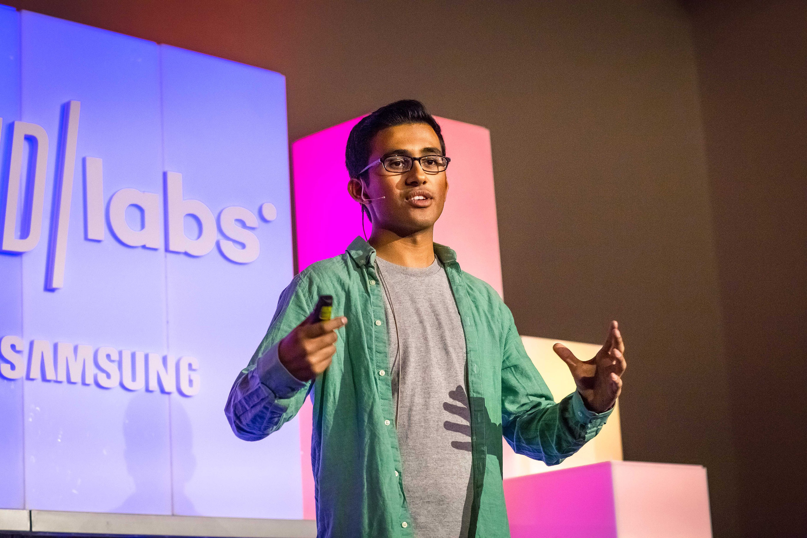

About QuantEdge
Our Origin Story
Founded in 2022 by a rare collaboration of data scientists and HR veterans, QuantEdge was born from a fundamental observation:
“Traditional hiring systems violate the most basic law of optimization — they maximize noise instead of signal.”
Resumes are static snapshots of a dynamic human system. Assessments are generic, one-size-fits-all approximations. As a result, high-potential candidates are lost in the entropy of outdated processes, while organizations struggle with mismatched hires.
The Problem, Mathematically
In classical hiring, candidate evaluation often resembles:
Score = Resume Keywords + Years of Experience
This oversimplified linear model ignores crucial variables like adaptability, learning velocity, problem-solving depth, and cultural resonance.
At QuantEdge, we redefined the equation.
Fit = f(Skills, Potential, Behavior, Context, Growth Rate)
where f(·) is a continuously learning AI model — not a static rulebook.
Our Approach
Inspired by systems physics and machine intelligence, we treat hiring as a dynamic matching problem, not a filtering exercise. Every candidate and role exists in a multi-dimensional space, and our mission is to minimize mismatch energy.
Loss = ||Candidate Vector − Role Vector||
The smaller the loss, the stronger the alignment — technically, culturally, and humanly.
Growth Through Precision
Today, QuantEdge is a team of 100+ engineers, researchers, and hiring experts operating across Bengaluru, Hyderabad, Delhi, and Mumbai. Together, we design systems that learn, adapt, and improve with every interaction.
Our platform has helped 1,000+ organizations — from fast-scaling startups to Fortune 500 enterprises — discover talent not by chance, but by calculation.
Our Philosophy
We believe hiring should follow the same principle that governs nature:
Right Match → Stable System → Sustainable Growth
By reducing randomness and increasing insight, QuantEdge transforms hiring into a predictable, fair, and high-precision process.
QuantEdge isn’t just fixing hiring — we’re redefining it, one equation at a time.
Leadership Team

Dr. Arjun Mehta
Founder & CEO
Ex-Google AI, PhD IIT Bombay. Arjun leads our vision and strategy.
Priya Sharma
Chief Technology Officer
Ex-Amazon, 15+ years in scalable systems. Priya oversees engineering.
Rahul Verma
Head of AI Research
Published AI researcher, deep learning expert. Rahul drives our matching algorithms.
Neha Gupta
Chief People Officer
Ex-Microsoft, passionate about building inclusive cultures.